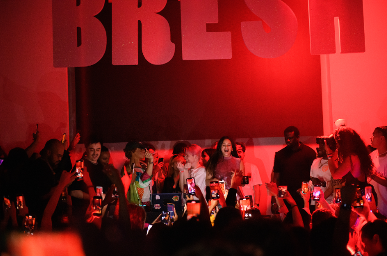

HISTORIA
Todo empezó cuando Jaime James reservó una fecha en Beatflow, el boliche de la avenida Córdoba ubicado en el límite entre Palermo y Villa Crespo, aunque no tenía bien definido qué hacer con ese espacio. “Soy testigo de la primera vez que se nombra a la Bresh en la historia”, dice Alejandro Saporiti a LA NACION y acompaña esas palabras con un toque de brillo en los ojos. En el cuadro de Zoom este DJ lleva ese nombre, pero en el mundo del arte es Broder. Desde Miami, un terreno cada vez más conquistado por esta propuesta, el DJ y organizador cuenta que en una charla de Facebook entre él y Jaime surgió la pregunta de la que se desprendió todo lo demás: “¿Y si hacemos una fiesta como las que hacemos en casa?”. -Ya tengo el nombre: Bresh -¿Qué significa? -No sé, pero suena a birra importada.
